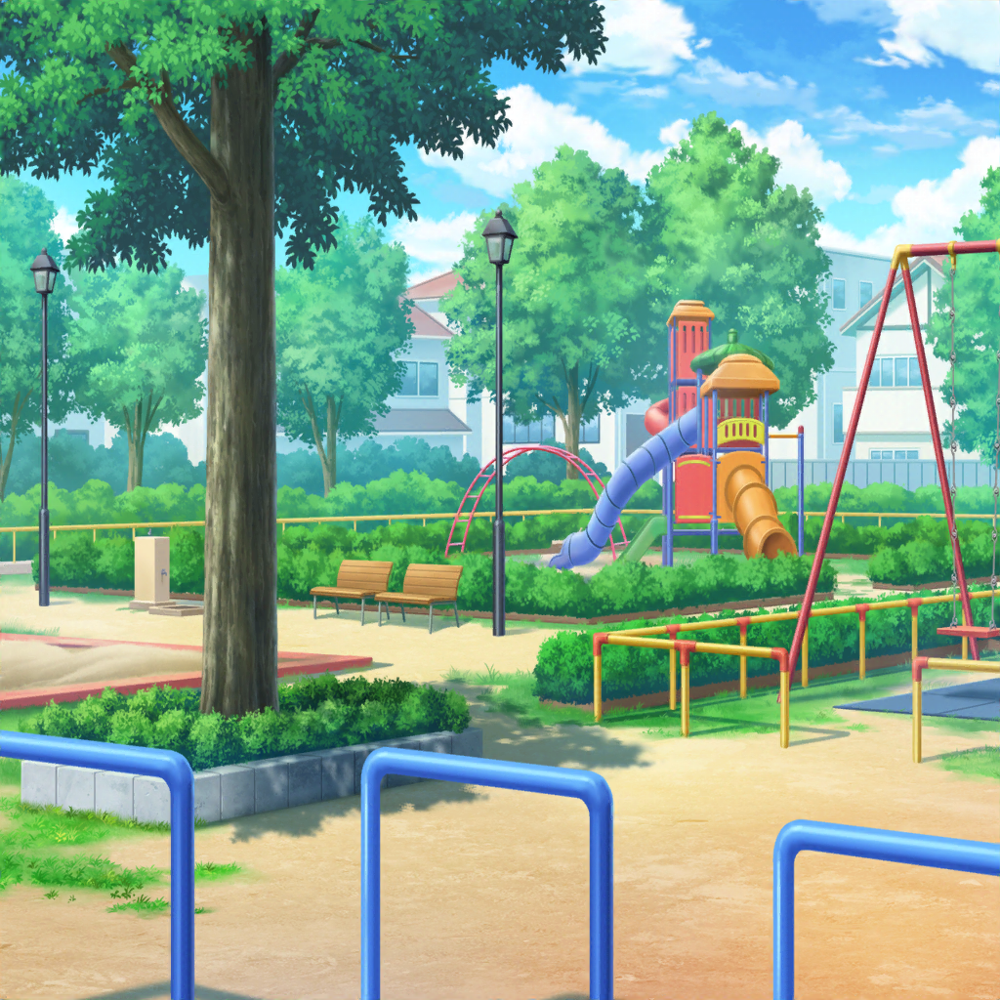

北沢家 はぐみの部屋
はぐみ
とーちゃんも一緒に探してくれたけど、
たぶんこの箱に入ってるのがそうみたい
香澄
すごい……
本当にあったんだ！？
はぐみ
とーちゃんね、子供達のお願いごとが書いてある短冊だから、
毎年、七夕が終わったら笹から外して、
こうやって保管してたんだって
有咲
確かに、そういうのは雑に扱えねーもんな
沙綾
おじさんって、子供に優しいもんね。
ホントそういうところ、はぐみと似てるよねー
はぐみ
そうかな～？ えへへ～♪
とーちゃんと似てるって言われると、なんかうれしいな～
有咲
けど……
この中に、子供のころの二人のお願い事が入ってるのか……？
……いよいよって感じだな
沙綾
有咲……
ちょっと緊張しすぎじゃない？
なんで有咲がそんなに緊張してるの？
有咲
なんつーか、歴史的な瞬間に立ち会ってる感じがして……
沙綾
まあ、その気持ちはわからなくもないけど
香澄
それじゃあ……
開けてみよっか……
はぐみ
うん！ 見たい見たい！
開けてみよー！
有咲
ちょ、ちょっと待てって！
こんな瞬間、そう滅多にあるもんじゃないんだから、
もっと大事にしろよ！
香澄
さっきから有咲が１番楽しんでる感じするけど……
有咲
べ、別にそういうわけじゃねーけど！
ただ、今までは、思い出話を聞いてただけだったけど、
今度は実物だから、ちょっとはドキドキするっつーか？
有咲
てか、ホントに何も思い出せないのか？
どんなこと書いたか
香澄
うん、全然。
ていうか、私も早く見たいんだけど！
もう開けちゃうよ！ うん、開ける！ オープン！
有咲
わ！ わ！ マジで！？
香澄
うわ～！ たくさん短冊が入ってるね～！
沙綾
この１枚１枚に、それぞれの想いが詰まってるのか……
確かにこれは捨てられないよね……
はぐみ
えーっと、はぐみとかーくんのは……
香澄
あった！ これ、私のだ！
『とやまかすみ』って書いてある！
はぐみ
あ！ はぐみのも見っけ！
ちゃんと『はぐみ』って書いてあるよ！
有咲
うわー、マジで！？
え？ なんて書いてあった？
やべー！ テンション上がるわー！
香澄
それじゃあはぐ。
せーの、で見せ合おうか！？
はぐみ
うん、いいよ！
それじゃあ――
香澄・はぐみ
せーの！
香澄
えっとね……
私のお願いごとは
『まいにちたくさんあそべますように』だって……
はぐみ
はぐみはねー、
『ゆうえんちにいけますように』って書いてあるよ
有咲
つーか…………
………………
………………え？ それだけ？
香澄・はぐみ
それだけ
沙綾
はは、あはは……
そっか、そうだよねー。
やっぱり子供が考えることって、こんなことだよねー
有咲
はぁぁ、緊張して損した！
もっと劇的なことが書いてあると思ったし！
『ずっとなかよしでいようね！』とか、そういうの！
有咲
それにしても二人とも全然変わんねーなー。
ある意味、安心するわ。
北沢さんに至っては『ゆうえんさ』って書いてあるし！
はぐみ
あ！ そういえばはぐみ『さ』と『ち』が苦手だったよ！
今、思い出した！
香澄
わかる～。
子供のころ『さ』と『ち』って難しかったよね？
これは、罠だね
はぐみ
ありがとー、かーくん！
そう言ってくれるのはかーくんだけだよー！
沙綾
ふふふ……
ホント二人って、息がぴったり
有咲
はは……
さすが幼馴染みって、感じだな……
香澄
あ！ ねぇ、はぐ！
それじゃあ、小さいころのはぐの願いごとを叶えるために、
今度、遊園地行こうよ！
はぐみ
うん、やったー！
さっすがかーくん、ナイスアイディアすぎるよ！
香澄
有咲とさーやは、もちろん行くでしょ？
りみりんとおたえも誘ってー。
あと、ハロハピのみんなも誘うよね！？
はぐみ
わーい！ 楽しみだな～！

かすみ
ねー、はーちゃん。
どんなおねがいごとにするか、もうきまったー？
わたしはきまったよー
はぐみ
うん、はぐみもきまったよ！
はぐみはねー、ゆうえんちにいきたいんだ――
はぐみ
かすみちゃんといっしょに！
かすみ
わたしはね、
もっともーっとたくさんあそびたいってかいたよ――
かすみ
はーちゃんといっしょに！
かすみ
はーちゃんといっしょにあそぶの、ほんとにたのしいもん！
だから、まいにちはーちゃんとあそびたいんだ！
はぐみ
はぐみも、かすみちゃんといろんなばしょであそびたい！
このこーえんじゃないばしょでもあそびたいもん！
はぐみ
ねえ、かすみちゃん！
おおきくなっても、ずーっとなかよしでいようね！
かすみ
うん！
ずーっとなかよしでいるー！
それじゃあ、ゆびきりしよーよ！
はぐみ
うん！
かすみ・はぐみ
ゆーびきーりげんまん、うそついたらはりせんぼんのーます！
ゆびきった！